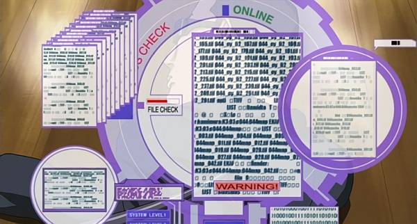
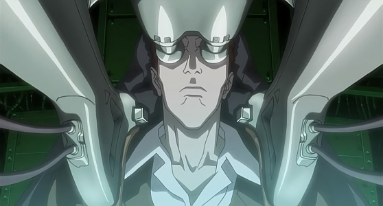
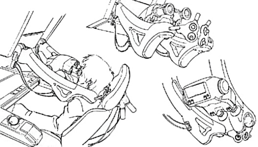
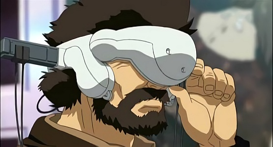
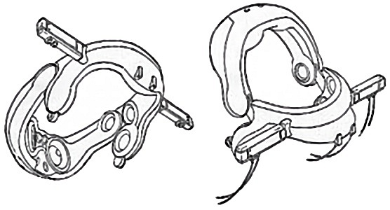
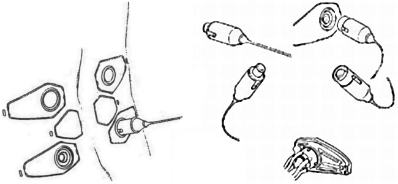
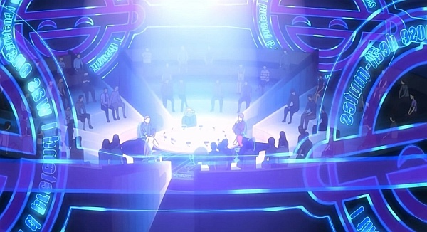
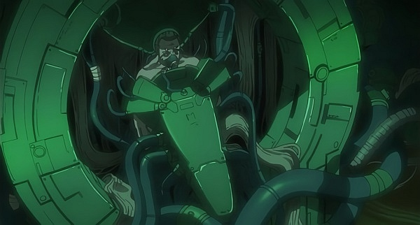
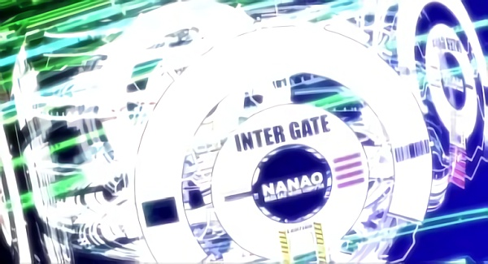
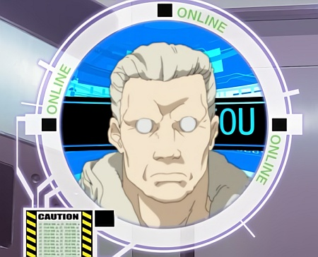

Forget everything you know about computers. Forget everything you know about the internet. Everything changed with the Cyber revolution. Most people don't even own computers. They own terminals. With massive networks of billions of computers and cyberbrains, the population now shares a common information database. The size of the internet's shareable knowledge increased exponentially, squaring in size every five years until finally, at the beginning of the this decade, the total bytes of knowledge on the global net, written on paper, would fill up the solar system.
With no centralized hub, the net found itself powered by the brains of the cyberized users accessing it every day. Information stopped being relayed over wire, replaced with satellite and cellular towers. There was no place on earth where the net did not exist. If one person with a Cyberbrain lived there, the net would expand to meet it. Everything anyone has ever conceived about the net has passed, replaced with new ideals the previous generation hadn't even conceived. People could recall every moment of their lives, upload it to a storable medium, and remember those moments at any time. They could talk virtually in binary with a computer, their brains running faster than anyone could possible type. Gone are the days of MAPCON CMMS software and large database maintenance programs. Like everything else CMMS software is controlled by the Cyberbrain and companies have discontinued their use of old CMMS software databases. Soon, you either got yourself a cyberbrain, or you found yourself as much an antique as a Neanderthal is now. You advanced, or you stepped aside.
In this future, everyone involved with the modern information age possesses a cyberbrain. However, this resulted in information-related crime increasing by a factor relating to information's growth. As crime increased, the need for defense increased as well. Soon, firewalls not only defended secured computer drives, but our own brains as well. As hackers became more and more prevalent, their powers increased. Soon, they could breach into firewalls and alter someone's perception... and later, their own memories. Barriers emerged to combat these new crimes. Barriers exist as active firewalls in both cyberbrains and external memories as well as all forms of Artificial Intelligence. Barriers exist in two levels, the surface monitors the cybernetic relationship with the outside world. It regulates communication with external sources. Some communication is required so that net access is possible. The second barrier is the unspoken Ghost Barrier. Part of this is the simple transition from digital information to organic memory, the rest is a technological barrier blocking people from diving to much into someone brains. Of course, one could let them if they want. Accessing and altering are two very different situations.
In old stories, hackers would steal, delete, copy and alter information. In the end, that's all they could do. Now, hackers can alter perceptions, generate reality, fabricate memories, and even hijack someone's own mind. Hackers in the future are a robust bunch. They operate on both sides of the fence, defenders and attackers. Some simply dive to steal secrets... to know more. Some dive because of a need to connect... to simply have the access and freedom to go anywhere and see anything. Others dive for control. They want to be able to dominate... In this world... you don't have to be big... to be in control. Now the smallest and weakest person can control the masses... all he needs is a connection and the talent to go where he does not belong.
Thankfully, they are still more defenders than attackers and most cyberbrains will live through their existence never knowing a hack attack. The basic Firewalls are more than enough to regulate information and keep the spammers out. But the miscreants are out there. The most feared are the super-class A hackers. Rumors point there may be less than a dozen world-wide. The hackers can alter the mind in ways only god is known to do. They can totally re-write someone's experiences, even change their personality. Most of all... they can Ghost Dive... actually swim around in someone else's subconscious, see what they want, change what they will, and disregard the rest. Barriers get better... and so do the hackers. Now barriers can strike back, confuse, or even kill their attackers. Every policing agency on the planet have sections for cybercrime.
Digital information truly flows through the planet now. Surfing the net in the new age is as different as talking on the phone is to the dawn of the internet at the end of the last century. In the future everything is cyberized... everything is computerized... Everything can be controlled. Nothing is safe.
The net is vast... and populated...
The approximation of mobile media to physical human body started with portable then wearable terminals, and finally settled to implantable terminals, which ushered civilization into a new era where man and machine were no longer separate. Such integration was realized by direct transplanting of communication terminals to the physical body, allowing the body and mind to interact immediately with standard computer and network technology. These implantables gradually took over the outdated portable/wearable technology, to be recognized as the prototype of cyberbrain. After the ever-growing technology introduced the practical utility of micro-machines, cyberbrains became both safe and inexpensive. This caused rapid popularization of cyberbrains within countries that had little or no religion restrictions, such as Japan.
But the wide prevalence of cyberbrains caused social anxiety : people were exposed to risks of brain-hack because of their neural connection to the entire population using cyberbrains. The most serious brain-hacking crime was "Ghost Hack", a case where total individuality including past memories and body discretion of a certain person became the subject of the hacker. Various countermeasures were taken, such as the development of numerous protective walls and barriers along with reinforcement of regulations, not to mention security intensification within the neural network system. But they failed to abolish cyber-crimes, thus resulting in a rat race : further development of protective walls and barriers, and the emergence of more intelligent and original hackers.
-- Yoshiki Sakurai
Against prior knowledge in older, outdated science fiction, one does not actually move anywhere. The graphical representation of the net is a purely optional experience, sometimes used when hackers dive into access ports into secured areas. However, the space and the icons are purely reflective. There is no movement. People rarely create avatars and most hacking attacks have no graphical interpretation. The Hollywood route simply does not take place.
Hacking requires no map, no icons. The only real extent of imagery are when penetrating InterGates to get into memories. Beyond that, graphics are purely optional. One first must locate the memory, then try to push through the barriers... then they can initiate an attack. Once one is past the barrier, they are free to do what they want. In fact, the target may not even know they are being attacked.
Statistics : the most important statistics to access the Net are Intelligence (INT) and Technical Ability (TECH). Your TECH save (1D10 roll under your TECH) will allow you to avoid some effects of hack attacks.
- Your TECH is the basis of your barriers during attacks and of all defensive rolls on the Net in general.
- Your INT is used to recognize attacks, execute them and infiltrate barriers using the Interface and System Knowledge skills. Finally, it defines your effectiveness in cyber fighting (by determining how many and which attacks you can use).
Nevertheless, your INT and TECH can be damaged during fighting on the Net. This will affect your efficiency for the future as your number of attacks will be reduced.
Barrier Defense : your Barrier Defense is a fixed number like your SP. Although a person may not be aware that they are under attack, this number will not be decreased. It is split into two, Surface Defense and Ghost Defense. You can own several barriers but they do not increase the value of Defense, they are just additional defenses to be bypassed by the hacker before accessing your data.
Surface Defense (SD) : this defense is used to defend against attempts to penetrate the interface connecting a cyberbrain with the outside (audio, visual, tactile, etc). This barrier is necessarily partially open to allow communication with the Net. Removing this defense allows the hacker to more or less alter the target's perceptions (depending on the attacks used).
Surface barrier : 10 + TECH + barrier value + possible bonuses
Ghost Defense (GD) : always higher than Surface Defense, this barrier protects the Ghost and its memory from external attacks. Like all firewalls, it can be dropped willingly to let someone access specific memories. It is also able to counter-attack thanks to its active defenses. You must bypass the surface barrier(s) before attempting to pass the Ghost barrier(s).
Ghost barrier : 15 + TECH + barrier value + possible bonuses
A netrunner is more or less gifted or specialized in certain hacking operations and knows some types of targets better than others. To represent this we will divide the Interface skill into ten Commands and ten Targets. Each Command and Target will have a value from 1 to 5 and will denote the expertise and softwares the netrunner has to attack a given target, or perform certain tasks. The netrunner will distribute its Interface x 10 between these different Targets and Commands.
For example : for an Interface skill of 8, 80 points to be distributed between its 10 Targets and 10 Commands (giving a value of 1 to 5 to each).
Note: in the rest of the document we will refer to these half-skills by the terms Command() and Target().
How to use it : for each action taken by the netrunner, he will choose a Command and a Target and add the value he has put in each one to determine the total value of his skill for that action. Example : if a netrunner has Locate(4) and Vehicle(3), his skill will be 7 to try to find a car via the location systems on the Net.
Roll : INT + Command() + Target() + 1D10 which has to beat a Difficulty (Diff) which will often depend on the type of target.
When the Interface skill increases by one point, the netrunner distributes 10 points among the 20 Commands and Targets (within the limit of 1 to 5).
As a general rule we will follow this model :| Difficulty | Target example |
| 15 | Street-front public or corporate website |
| 20 | Low-security target (school or SMB network) |
| 25 | Personal computer connected to the Net (fixed station) |
| 30 | Corporate, police, government agency non-public networks |
| 35+ | Top-secret corporate and military servers and networks |
A netrunner can slightly modulate its array of programs, viruses and optimizations at the beginning of a netrun. He can temporarily transfer two levels of his skill in one Target to another Target (same for Commands). He can do this as many times as he wants. This preparation takes about ten minutes and therefore cannot usually be done in the middle of an infiltration and certainly not in the middle of a fight.
Things are going on the Net much faster than in reality. A netrunner will therefore make an initiative roll each round (just like fighters), but he will usually have double the number of actions for the same duration (3 seconds round). The fastest netrunners are able to perform up to 10 actions per round. Of course, the more actions you perform, the more malus for each one (like in a normal fight).
Netrun initiative : INT + Interface + Speed + 1D10 (2D10 and more for some cyberbrains)
The netrunner generally has 2 actions for every 10 initiative points (0-10 : 2 actions, 11-20 : 4 actions, etc). For the physical fight, it is 1 action per 10 points.
On the other hand, unlike the -3 malus for each additional physical action, virtual actions cost only one malus point each. Taking 2 netrun actions for a round does not result in a malus (unless cumulated with physical actions), taking 4 results in a -4 malus, 6 in a -6 malus, etc.
If a netrunner is interfaced and wants to hack while in physical combat, he will have to launch a netrun initiative and a normal initiative to know when to act in each world. He will get a malus on all actions according to the number of actions performed (physical + virtual).
For example : with an roll of 15 in physical initiative and 25 in netrun initiative, this allows a maximum of 2 physical actions and 6 virtual actions. Performing all these actions in 3 seconds would result in a malus of -12 on all rolls! On the other hand, if the netrunner is hiding behind a dumpster and only deals with hacking, his 6 netrun actions would only be at -6 each.
A netrunner programs its own software (viruses, electronic countermeasures, packet sniffers, code crackers, decryptors, logic bombs, etc). All programs on the market are identified and barriers sense them coming before they can do anything. These homemade programs are already counted in the skill level (Command and Target), but a netrunner can also program something specific before going under fire if he has information about the target. He can also buy disposable software from another netrunner but only once, because as soon as the attack is deployed, the adaptive barriers will build a specific defense, and communicate it to the rest of the Net in less than an hour. Programming takes time, but can be a great help for the attack that will follow.
Programming yourself requires a Library Search roll (as in Locate), then a System Knowledge roll, and finally a Programming roll. Add the margins of success of these three rolls (against the specific difficulty of the target type). The total of the success margins divided by 5 is the total bonus granted by this program for this attack (for all rolls, including the Locate roll). For each +1 of this bonus it is necessary to spend two hours of preparation.
The program can also be purchased, each +1 of the program costing 500 eb (negotiable of course).
Viruses come in many shapes and forms. They are so prevalent, that to detail all the rules of all the functions of viruses, it would take up its own book. What are listed here are various ways to create and implement basic viruses. Generally, to construct a virus, the programmer makes a Programming roll. Each roll results in one hour of programming time. Each DC reflects how complicated the virus is and how many functionalities the programmer can attempt to incorporate.
Making a vaccine : a computer virus is like an organic virus. A vaccine can be made to counteract is effects. The vaccine is a program that erases the virus and its harmful effects (unless they are permanent). The create a virus requires a Programming roll that beats the roll the designer used to create it. It also requires at least one hour per roll. However, an original copy of the virus is required - either a virus that has infected someone or copy from the source. The vaccine can then be sent to all parties involved. Vaccines are programs that do not rewrite any data on the cyberbrain, but hunt down programs that do not belong. As a result, it is a surface action and does not need to break through barriers to work.
Virus ID : having a copy of the virus and decompiling it also results in an specific ID template of the programmer. It does not reveal names or phone numbers. The ID is simply the pattern of programming. If two viruses by the same programmer are placed side by side, enough similarities emerge to connect them. This ID cannot be changed because it is not really an ID, just a pattern of programming.
Using viruses : viruses almost have skills on their own. They carry a Interface skill = to the programmer's – 5. They have a number of Hack Attacks also equal to their programmer. They cannot swap any attacks from their memory. Choose the actions and how they will operate in order. The virus cannot deviate from their list or their order. Virus can be implanted or used to hack. If they are used to hack, they do so with a reduced ability of course, but it saves the cyberbrain from Intelligence damage. A virus that gets hit with any damage is instantly vaporized. A cyberbrain can only contain a number of viruses equal to INT/2. The virus cannot be implanted with actions the programmer. The programmer must also roll to succeed in the action as if doing the action herself when programming it. A success implants the program successfully. Failure results in time loss. Remember, every roll, regardless of success or failure, takes an hour.
The actions implemented cannot cause INT damage as there is no power in the virus to cause such a feedback unless given the Strike function. Viruses get no bonuses for direct connection via QRS or a Total Immersion Harness.
Example : Nanao A used a Delayed Action virus with a Military Command Encryption Key to take control of security guards and attempt an assassination. The memory required is a Basic one (Delayed Action 5 + Databank 2 + Basic 15 = 22). Its danger resided with Nanoa's Programming skill and the fact the Databank had the Command Encryption Key).
Cellular Suicide Program : a murder program that triggers the apoptosis function in every cell of the body, and by inducing this, leads to a person's death. To make micromachine rice (MM-rice) suitable for every environment, biological phenomena were overwritten at a genetic level, and as an application of this, it is possible to intentionally trigger apoptosis (planned cellular death as part of the immune system), something that has always been present in all cells. If rice that the cellular suicide program has been spliced into is taken in and absorbed into the human body, when the program is activated, apoptosis occurs, and the person dies.
|
|
Databank : Databank is a section of the virus that contains information. This could release at a specific moment or be used as a storage area. A virus may attack areas to retrieve information or could already have information the virus is programmed to release. The Databank may also be used to store useful information the virus requires to operate (like a Command Encryption Key).
Delayed Action : a virus that will activate only when a time is reached or a command given. The virus must be able to receive the command (so it cannot receive it through a locked off cyberbrain for example).
Evolution : an updated and newer version of the HA virus. Evolution viruses have twice the number of actions contained in memory and can interchange these additional actions with those in memory at any time. Additional, the Evolution no longer has to attack in order and can thus use any of its attacks in any order.
HA-1 : H-A (Hyper-Attack) viruses are attack viruses that are exempt from being fixed in their memory or attack order (see below). They can swap out attacks like normal cyberbrains. HA-1 carries a spare memory of 1 additional action and can swap into its memory instantly before the action comes up.
HA-3 : HA-3 has 3 spare memories.
HA-5 : HA-5 has 5 spare memories.
MicroMachine : Micromachine viruses are a very rare and dangerous breed. These are Micromachines that carry the virus instead of the virus being transmitted digitally. Micromachine viruses circumvent all surface barriers altogether and attack the cyberbrain directly. They are difficult to handle and must use two memory spaces. They cannot transmit their viruses. Micromachines must be placed in the body, either through a syringe or ingested through food. Specific Micromachines must be purchased (500 eb). Some MicroMachine viruses can actually effect organics as well.
Modular : similar to Toy Bombs, they are disguised in e-mails or picture file header data, and when certain conditions are met, they compile into a single program. In the "Laughing Man" attack on the Superintendent-General, one of these was slipped into the security detail and stored inside their cyberbrains. The Modular virus finishes its attack profile and then transmits itself to another target, usually the same type. The programmer must use one memory space detailing the target and the range from the previous one. A modular virus can, for example, target all robots in a factory but only those. It will continually attack the target and not move onto the next one until the first one is finished.
Pandora's Box : any virus that when opened will start up and do what the virus is made to do. It is similar to the Toy Bomb except it does not require a Interface roll to "disguise" itself but it cannot be equipped with a Delayed Action function. It must be downloaded or implanted and cannot be transmitted in.
Probe : this is a violation of the Telecommunications Bureau. A virus that attacks every nearby system in a 150 meters in order to find a specific one. However, it only locates something. No attack actions can be incorporated.
Relay : the Relay function transmits data back to another source, either a cyberbrain, server, or external memory. This can relay information that the virus stores on a Databank, or it can relay location data from a tracer virus.
Strike : normal viruses cannot cause actually damage to a target (electrical feedback or temporary/permanent brain damage). However, strike viruses can, but are only half as effective. Like cyberbrains, viruses need to have a power source to initiate the strike (connected to a terminal).
Toy Bomb : like a virus, it is actually concealed as an icon or image file. It sits in plain view until the conditions are met (usually clicked). Toy Bombs must be accepted by the cyberbrain, the AI or by the user downloading it into a memory. The advantage of this is that it requires no hacking to download the virus into memory. On the other hand, the programmer has to perform an Interface roll, the result of which is the disguise value of the Toy Bomb... that value is the Difficulty to spot the bomb for what it is.
Tracer : locates where someone is hacking from. Upload the virus into somewhere where someone is hacking into or remotely accessing and it tracks the source. This function takes up additional memory space. It performs an Interface roll in opposition to that of the target. If it beats the hacker, it locates the hacker. If it has any other attacks, it can do that as well. If added with the relay function, it can send that information back to the programmer, allowing the programmer to directly hack the target.
Trash Bomb : is any virus that when deleted will start up and do what virus was made to do.
Most netrunners in 2040 use their cyberbrain for their "work" because a cyberbrain is much faster than a cybermodem (the preferred tool of netrunners in the 20s) or a computer. It is nevertheless possible to use these obsolete devices with the following maluses :
- Cybermodem : all Interface and netrun initiative rolls are at -5 unless attacking another cybermodem.
- Terminal/computer : all Interface and netrun initiative rolls are at -10.
However, these devices are less dangerous because they have circuit breakers that protect the netrunner from electric feedback damage. It goes without saying that attacking an obsolete target from a cyberbrain gives a bonus to the Interface roll instead of a malus.
Using a cyberbrain with a wireless connection limits bandwidth, resulting in a -5 malus for the Interface rolls and for the initiative. It is therefore recommended to use an interface cable and a fixed terminal for the most difficult missions. On the other hand, with wireless, the chances of damage are lower (direct electric feedback doesn't work, but the enemy can follow your trail and infiltrate your cyberbrain and Ghost, and damage you).
However, using a cyberbrain with multiple QRS interface jacks gives the netrunner a definite advantage : +2 per additional QRS cable, up to a maximum of 4 cables (maximum bonus of +6 therefore). On the other hand, using multiple cables increases the damage considerably during an electric feedback attack (each additional cable adds 1D6 points of damage).
The wireless connection of a cyberbrain is done via terrestrial relays located everywhere in "civilized" areas. It's another story in the bush. In these relay-free zones, only a satellite connection will be able to connect a cyberbrain to the Net. The cost of such an equipment is 5000 eb.
Bonuses provided by cyberbrains :
Boost your cyberbrain :
| Equipement | Cost | Description |
| Barrier Breaker | 5000 | +2D6 bonus to next three attack rolls. |
| Cyberbrain Partition | 2000 | Physical damage from cyberbrain attacks through viruses or electrical feedback are halved. |
| CyberHarness | 2000 | +10 to Interface, Library Search and System Knowledge. |
| Dummy Barrier | 500 | 25% chance the Dummy Barrier will short out on a physical attack. All rolls suffer -5 penalty. |
| Ice Breaker | 2000 | It incurs a -2D4 penalty on the Passive Barrier's defense bonus on the next three rounds. |
| Memory Player | 250 | Playback external memories. |
| QRS Plug | 10 | Connect plug. |
| Retractable QRS Plug | 50 | Same thing but retractable in a frame. |
| Regenerator | 10000 | Recovers 1D2 lost INT each time its used. |
Barrier Breaker : a program with a preset number of hacking keys to get through barriers. Barrier breaker can't really break through barriers as more they go through their hacking keys to find one that works. When someone uses a barrier breaker against a barrier, he gains a +2D6 bonus to his next three attack rolls. After that, the barrier breaker offers no help to that specific barrier although it can be used on others.
Cyberbrain Partition : a cyberbrain partition sections off portions of ones memories and Ghost, to lesson the effects of physical attacks. There is little downside other than it's cost. Physical damage from cyberbrain attacks through viruses or electrical feedback (temporary or permanent INT damage) are halved.
CyberHarness : a fully system that allows a deeper dive into the net. It offers a +10 to Interface, Library Search and System Knowledge.

Dummy Barrier : a forced disconnect device used by placing it between a QRS plug and a terminal. It detects a physical attack via an offensive virus while the user is wired. It physically ejects the wire that connects the user and the subject or absorbs the shock but acting like a cyberbrain and taking the jolt. Each time a physical attack comes through, there is 25% chance the dummy barrier will short out, rendering it useless. It will still absorb that attack but then no others. If the barrier survives, it functions perfectly the next time with no loss in function. It just needs to be reset. While diving through a dummy barrier, all Interface and Initiative checks suffer -5 penalty.
Ice Breaker : the Ice breaks down defensive barriers. It is a program that acts on its own to find weaknesses in barrier defenses. It can only be used on Passive barriers. If used against an attack barrier, the Military defense would detect the probe and fry the program. It incurs a -2D4 penalty on the Passive Barrier's defense bonus on the next three rounds.
Memory Player : the memory player is a headset system that allows one to replay back visual and aural data back recorded from either an external memory or from a cyberbrain. It offers no bonus to skill rolls, simply recreates a recorded memory in detail for someone else to experience.

QRS Plug : a simple one meter cable for connecting a cyberbrain to another QRS plug.
Retractable QRS Plug : connected to a cyberbrain, it offers a convenient and speedy way of connecting a cyberbrain.
Regenerator : although permanent INT damage is... permanent, a regenerator can bring back most damage at the loss of some knowledge. The regenerator recovers 1D2 lost INT each time its used but every time it is used, the recipient looses x2 of that amount in Int based skills points.
Barriers are the only line of defense between the cyberbrain and the vast network beyond. One can have as many barriers as their TECH/2 statistic (minimum 2, 1 Surface, 1 Ghost). Some can have double or triple barriers. External memories, servers or AIs have no barrier limit although few ever go above five. All characters receive a passive level 1 barrier for surface and Ghost automatically for free when they receive their cyberbrain. Additional barriers or upgrading cost money. The Barriers Defense bonus is added to the Total Barrier Defense that hackers must be to be able to cross to access the cyberbrain.
| Barrier Type | Cost | Barrier Defense | Maze Rank | Attack Rank | |
|---|---|---|---|---|---|
| Passive Civilian Barriers | |||||
| Alpha - Level 1 | 500* | +6 | -- | -- | |
| Beta - Level 2 | 1500 | +8 | -- | -- | |
| Delta - Level 3 | 3000 | +10 | -- | -- | |
| Gamma - Level 4 | 6000 | +12 | -- | -- | |
| Network - Level 5 ** | 10000 | +14 | -- | -- | |
| Network - Level 6 ** | 15000 | +16 | -- | -- | |
| Network - Level 7 ** | 22000 | +18 | -- | -- | |
| Military Attack Barriers | |||||
| Alpha - Level 1 | 2000 | +8 | -- | 10 | |
| Beta - Level 2 | 6000 | +10 | -- | 12 | |
| Delta - Level 3 | 12000 | +12 | -- | 14 | |
| Gamma - Level 4 | 24000 | +14 | -- | 16 | |
| Network - Level 5 ** | 10000 | +16 | -- | 18 | |
| Network - Level 6 ** | 15000 | +18 | -- | 20 | |
| Network - Level 7 ** | 22000 | +20 | -- | 22 | |
| Maze Barrier | |||||
| Alpha - Level 1 | +50% | 5 | |||
| Beta - Level 2 | +150% | 10 | |||
| Delta - Level 3 | +300% | 15 | |||
| Gamma - Level 4 | +500% | 20 | |||
| Network - Level 5 ** | +800% | 25 | |||
| Network - Level 6 ** | +1200% | 30 | |||
| Network - Level 7 ** | +1600% | 35 | |||
| Boosters | |||||
| Alpha - Level 1 | +50% | +1/2 TECH | |||
| Beta - Level 2 | +75% | +3/4 TECH | |||
| Delta - Level 3 | +100% | +1 TECH | |||
| Gamma - Level 4 | +150% | +3/2 TECH | |||
| Variable | |||||
| Stage 1 | 500 | +5 / 10 rounds | |||
| Stage 2 | 1000 | +10 / 15 rounds | |||
| Stage 3 | 1500 | +15 / 20 rounds | |||
| * Free with cyberbrain purchase. ** Only available for servers and systems, not for Ghost or AI cyberbrains. | |||||
Shifting Ghost Defense and Surface Defense : if one is especially paranoid of one barrier being breached over another, they can move their Barrier Defense around. The barrier defense listed below is added to both Ghost and Surface Barrier Defense numbers. However, upon purchase, one can shift up to half the amount of one side to the other. Example : a Beta barrier offers a +8 bonus to both Surface and Ghost Defense. Upon purchase the user can shift up to 4 from either side and move it to the other (+4/+12).
Barrier types :Passive civilian barrier : standard defense barriers everyone has or uses at some point. These are cheapest and most common. Thus, they are usually the easiest to break.
Barrier levels : barriers come in levels : Alpha (1), Beta (2), Delta (3) and Gamma (4). Each more powerful and more expensive than the last. Other abilities and devices can raise Barrier Defense even more. There are equipments and hack actions that can increase that.
Boosters : a booster is a barrier modification that increases the usefulness of ones TECH bonus to defense.
Ice-9 hides behind a dumpster while his acolytes open fire across the driveway. She connects to the Net (wired plug on an access terminal) with her cyberbrain (CB : Speed +2, Interface bonus +2). She sees the Net around her and launches probes to see what is accessible.
Her netrun initiative (25) gives her 6 actions. She feels great tonight and takes them all, for a -6 penality on each of her rolls.
The scrolling door clicks and opens slowly. Shots are exchanged. Ice-9 unplugs and draws her Malorian. She hears a cry of agony and the heavy impact of a 2-ton Fenwick that flattens an individual against a wall, ending the shooting. The heavy door finishes opening.
Klick holsters his Minami submachine gun as Ice-9 emerges from behind the dumpster.
"Damn, you took your time ! Did you do your Christmas shopping or what ?", Ice-9 gives him a killer look "Shut up and pick up the bodies, we've got a lot of work to do !"
A new generation of netrunners has emerged since the emergence and widespread use of cyberbrains : Ghost hackers. It is indeed possible for a talented netrunner to infiltrate the cyberbrain of an individual with whom he has eye contact or whose coordinates he knows (see section 5). Cyberbrains usually have a good barrier and are therefore difficult to infiltrate, but it's worth the effort. Once penetrated, it is possible to do many things, such as change what the target sees and hears (to make you invisible to the target's eyes or to make visions appear), paralyze the person, play with their cyberwares, listen to their cybercomm conversations, etc.
All human cyberbrains (as opposed to the AI of an android or a robot, still...) contain a Ghost which is somehow the mind of the individual, his humanity. This area is even better guarded than the cyberbrain itself (best barrier) because a netrunner that will infiltrate it will be able to play with the memory and the recollections of the individual, even his personality. It is thus possible to steal, modify, erase memories and even modify the most vital functions of the individual.
The heaviest penalties are incurred by those who infiltrate and modify a Ghost.
System Knowledge/Interface : these skills can receive bonuses/malus depending on the equipment used.
| Connection | Modifier |
| Through a Dummy Barrier* | -5 |
| Wireless | -5 |
| QRS Plug | +2 per additional QRS plug, up to a maximum of 4 plugs (maximum bonus of +6 therefore) |
| CyberHarness | +10 |
Back-hack : to be wiretapped. Unlike the old days where sounds were overheard from a telephone line, here, flowing data is decrypted and read. Encryption has been introduced into even current wireless net connections, but it is easy to decipher a code that uses shared key encryption, and if you can go to a location where you can receive radio signals, it is fairly simple to intercept message content, even more so than with a wired link. In this era, even net environments that utilize satellites are widespread, and encryption ought to be suitably reinforced, but in the end, they and the people who are trying to crack it are caught in a vicious circle.
To monitor using cyberbrains or to re hack someone hacking it to find the source. Back-hacking can only occur if one is aware he is being hacked. If target is aware, they can attempt to hack back to either attack the target or find their location. Both must make Interface skills rolls. The highest wins. The winning attacking blocks the back hack. The winning defender can sever the connection (by going Autistic) or try to hack back and using the appropriate action (cracking their barriers and attacking). If two Hackers enter the same system, they can attempt to back-hack each other in an attempt to push the other out.
Additional QRS Plugs : organic bodies only have 1 QRS socket. Most FBC have two. Few have more than 4. When hooking additional plugs, the hacker gains an additional +2 to all computer skills (Interface/System Knowledge). Additional plugs adds an additional +2 (no more than +6). The device being plugged into, however, must also have at least the same number of sockets and most do not have more than 4. More than 4 total sockets hooked up have no effect.

Teaming up : brains are like computers. Linking another cyberbrain can assist in searches and hacks just by using his brains processing power. Anyone can team up on a system better than other. Each one that joins in using the same hack attack gives the primary hacker a +2 to all attempts to all rolls connected with that hack.
Total Cyberbrain Defense : like in real combat, people can select to go full defensive, like increasing the paranoia of one's firewall. The character can elect to move any amount of his INT bonus (up to a maximum of half) to his Barrier Defenses (both of them). However, that character incurs that equally as a penalty to all Interface & System Knowledge rolls. This can be declared at the beginning of combat and can last as long as the character wishes. This is great for those non-hackers wanting extra protection instead of going into full Autistic mode. The character must declare going full defensive at the beginning of his attack.
Statistic Loss : various attacks cause statistic loss, either temporary or permanently. Points lost to temporary damage return at the rate of 1 point per day (or double that if the character gets complete bed rest) to each damaged statistic. Permanent damage, however... is permanent.
- Intelligence at 0 means that the character cannot think and is unconscious in a coma-like stupor, helpless.
- Technical Ability at 0 means that the character is withdrawn into a deep sleep filled with nightmares, helpless.
Hacking Key : a hacking key is a code access allowing someone to breach barriers. All military barriers have commander class hacking keys which allow authorized personal to break through to shut down cyberbrains if needed. Finding a hacking key allows one to circumvent all Surface barriers. Obviously, this is considered very important information. Many corporations own hacking keys to their personnel. Military commanders have keys to many of their troops. Having a key allows a hacker to circumvent the surface barriers and either go straight for the Ghost or start actions on the surface senses. If one has a key and attempts to ghost hack, they gain a +5 to their rolls for that cyberbrain. Entering Autistic mode will not prevent this breach as a key command overrides autistic mode.
Visual Camouflage : there are two types of complete camouflage. The most effective concealment is the overriding of cyberbrain visual data, making someone see something that is not there or to remove someone or something totally from someone eye-sight. The process of overriding ones optical data and replacing visual information in real time is also known as "stealing eyes". The process can make someone see something that is not there or not see something or someone in plain view. This was a known ability of the Laughing Man and is not an easy process. Hacking into one specific subject is one thing, hacking into anyone looking at the same target is another. An Omni directional virus would be the culprit then. This causes the same effects as being invisible.
The second type is full holographic virtual concealment. Although still not used widespread, its found some applications in covering large areas where hacking eyes would be considered too risky or impossible. The Tohoka Autonomous Region, for example, is covered by a huge holographic tarp. The TAR is built within a damn. The tarp covers the area in a lake, giving the illusion the dam is filled when it is not. Holographic Visual Camouflage cannot render something totally invisible but can block out objects with the appearance of others. It is also not effective against objects that are moving. However, it does create perfectly realistic looking terrain and can simulate several square kilometers of necessary. Obviously the power conceptions and the generator size make the concept of using it on anything other than large installations impractical. Tanks are the largest vehicles capable of using therm-optics effectively. Holographics are so real from a distance beyond 15 meters, there is not way to denounce its reality. Only within 15m, do viewers get a DC20 Awareness/Notice check to notice the illusion.
Autistic Mode : cyberbrains are almost always connected to the Net. One never needs to use it, like working on ones personal computer while on high-speed internet. Even though it is constantly connected, until a browser is opened, you don't actually use the link. However, you can pull a cord from the modem. Cyberbrains are all connected via cellular and satellite. If one does not want to be open to the internet, they can activate Autistic mode. This cuts the connection to the internet, severing all communication in both directions. This is the most surefire way to prevent outside attack of ones cyberbrains (if one is paranoid enough). Autistic mode prevents any visual and aural communication and cuts off one's cyberbrain to any external memory sources. All cellular communication is cut. This action must be voluntary by the cyberbrain and cannot be forced by an external source (although implanted viruses can also accomplish this). Anyone diving is instantly severed unless that diver has safeguards against this and has in place preventative measures if the situation occurs (for example the diver creates an illusion that the user is in Autistic mode while, in fact, not). Viruses inside are still inside and may still function even while in Autistic mode. However, barring these rare exceptions, Autistic Mode is the surefire way to prevent outside attack.
While in Autistic Mode, the cyberbrain looses all its bonuses since it is no longer connected to the vast network of knowledge that is the Net. Activating Autistic takes a full round. Deactivating Autistic Mode, however, takes more time. A full 20 rounds (1 minute) is required to re-attach the connections. Until then, the cyberbrain is still in Autistic mode. This makes switching on and off from Autistic in combat unfeasible.
Even with Autistic mode on, direct linking via QRS plug will circumvent the severed link. Autistic mode only cuts off the cellular connection, not the QRS plug. Cyber blocker will cut both the cellular and the QRS plug. Someone in autistic mode can still hack into a target via direct link. However, if that target is connected to the net, a rival hacker can track into through the net and dive through the direct link as could the target that is being directly hacked.
Jamming Barrier : jamming barriers are generators that can stretch from a single room to several blocks. This field blocks all cybercomms, radio, and non-direct plug hacking. Cyberbrains are totally disconnected unless going in via the plug. Viruses inside cyberbrains still operate.
Multiple Hackers : it is very possible a hacker enters a cyberbrain or external memory or AI system and realize he or she is not alone. Another hacker is present. At that point, they may try to communicate but more than likely, one will try to push out the other. To do that, Netrun Initiative must take precedent on who can strike first. They may attempt to lock out the rival or even back-hack the hacker's cyberbrain.
Initiating a push out is the same as Back Hack, involving both hackers to roll Interface skill to try and force the other out. Back Hacking, if successful, does not stop either ones dive, but simply allows one to trace into the rival hacker's cyberbrain to infiltrate their cyberbrain (going through the Ghost). Here, the infiltrator knows they lost the Interface skill so can risk staying connected to keep diving in the original victim cyberbrain or pull out and sever the connection with the rival hacker and original victim.
Pushing Out does exactly that. It pushes the rival out of the original victim, forcing re-rolling to breach into the victim again. By that time, the winning hacker might have raised a wall to prevent the looser from trying to access again. Hack Actions on the original cyberbrain/AI/Server, do not pass onto the rival hacker. Physical damage can be initiated if the rival hacker uses the victim cyberbrain to power up a biofeedback attack (Temporary or Permanent Brain Damage).
Cyber ID : once the surface barrier has been broken, the first piece of information relayed is the Cyberbrain ID. This also relays the IDs current location, allowing remote diving. This works with Back-hacked hackers as well. Cyberbrains IDs can be scrambled with the appropriate Hack Action. IDs are a serial number and company ID one can track to reveal one's name and even address. This is a fixed number hardwired in so unless the cyberbrain was purchase illegally, the Cyberbrain ID cannot be changed. However, secret government groups (Section 9 for example) have had their Cyberbrain IDs changed to the dummy company they are paid through and not Section 9.
Hacking into Death : brain function continues into death for several minutes. This gives a hacker some opportunity for a quick dive in. Wireless links fail automatically. However, if the target had an INT of 2+ and was not killed by massive damage, a direct QRS plug can still access the cyberbrain. The barriers start failing immediately. Along with the standard bonus with the QRS plug, one diving into an unconscious targets gains a +5 to defeat surface and ghost barriers. If a target is dead, there is a single 10 rounds (30 seconds) window when actually death occurs to dive into a cyberbrain. After this short time, all ghost and surface barriers are nullified. However, there is little that can be accomplished at this point except for data retrieval, Target IDs, and such.
Time Adjustments : after the first hour spent analyzing a barrier (just outside so a dive would be required), the hacker gains a +2 bonus to break that barrier. Every additional hour gains an additional +2 for up to 4 hours (total bonus of +8). This can only be made for that specific barrier and not for further barriers encountered. Also, this does not go towards hack actions rolls.
Here is a list of typical actions with an idea of their difficulty (which can change depending on the target). To attempt these actions you will need to roll with your Command() + Target() skill as described in the first section of this document. This is by no means a complete list but rather an inspiration for netrunners.
The full description of these actions can be found below in section 9.
| Diff. | Action | Type | Description |
| 10 | Change Self | Surface | You change your appearance online. |
| 10 | Encrypt Cybercomms | Surface | Encrypt a cybercomms between two targets. |
| 10 | Find the Path | System | Satellite relays the map of the area. |
| 10 | Hack Boost | Surface | +3 to your next hack roll. |
| 10 | Know Location | System | You instantly know the location of yourself in the world via satellite. |
| 10 | Relay Text | CyberHack | You cause a text message to appear on the screen of an electronic device. |
| 10 | Target ID | Surface | Add a friend-foe signature other members of your team. |
| 15 | Alarm | Surface | Alerts you to something it is programmed to detect. |
| 15 | Blur | CyberHack | A distortion surrounds the hacker which penalizes the target's rolls for hitting him by -2. |
| 15 | Command | CyberHack / Ghost | You give a subject a single command. |
| 15 | Cyberbrain Message | Virus | Sends out a message that's delivered when a specified event occurs. |
| 15 | Cyberbrain Scramble | Surface | Scramble your cyberbrain ID. |
| 15 | Daze | CyberHack | Clouds the mind of a cyberbrain. |
| 15 | Discern Lies | CyberHack | You know if the subject deliberately speaks a lie. |
| 15 | False Vision | Surface / Virus | Creates a static image in a certain location. |
| 15 | Target Arrow | Surface | An aura highlights the outline of the target. |
| 20 | Bane | CyberHack | Bane fills your enemies with fear and doubt. |
| 20 | Confusion | CyberHack | Targets becomes confused. |
| 20 | Darkness | CyberHack | Remove all visual input. |
| 20 | Degauss | CyberHack | Erase all files on a device. |
| 20 | Detect Thoughts | CyberHack / Ghost | You detect surface thoughts in a target. |
| 20 | Disguise Self | Virus | You make yourself look different. |
| 20 | Ghost Sound | CyberHack | Create a volume of sound. |
| 20 | Hijack Electronics | System | Take control of electronics hooked into the AI/server. |
| 20 | Infiltrate Cybercomms | CyberHack | Monitor outgoing communication from the cyberbrain. |
| 20 | Monitor | CyberHack | Access the visual and audio sensors of a cyberbrain. |
| 20 | Slow | Virus | Affected target moves and attacks at a drastically slowed rate. |
| 20 | Steal/Delete Program/Information | CyberHack | You remove or delete an operating surface action in the target. |
| 20 | Target Arrow, Mass | Surface | An aura surrounds and outlines the targets. |
| 20 | Temporary Hack Resistance | CyberHack | Gain an additional defense barrier equal to 20 + Interface. |
| 25 | Binding | CyberHack | Binding restrains target. |
| 25 | Charm | Virus | Makes a cyberbrain regard you as its trusted friend. |
| 25 | Cyberbrain Surveillance | CyberHack | Copy all visual and audio input of the target to your cyberbrain. |
| 25 | Delayed Command | Ghost / Virus | Delayed command. |
| 25 | Detect Cyberbrain Invasion | Virus | Become aware of any attempt to hack your cyberbrain. |
| 25 | Displacement | Virus | Appear to be about 50 cm away from your true location. |
| 25 | Electromagnetic Pulse | CyberHack | Create a power surge in the device that ruins electronic circuitry within. |
| 25 | Fear | Ghost | The target will panicked. |
| 25 | Floating Image | Virus | Create a moving image. |
| 25 | Hideous Laughter | Ghost | Afflicts the subject with uncontrollable laughter. |
| 25 | Lock Out | CyberHack / System | While diving inside a system, regardless of its type, you throw a wall behind you preventing others from diving in as well. |
| 25 | Silence | CyberHack | Target cannot hear a specific sound or is deaf. |
| 25 | Speech Jack | CyberHack / Ghost | You hijack ones vocal system, getting them to say what you want them to say. |
| 30 | Alert Barrier | Surface | + 5 to all barrier levels for 1 round / Interface skill level. |
| 30 | Decode Encryption | CyberHack | Decode encrypted visual information. |
| 30 | Dominate Person | CyberHack / Ghost / Virus | You can control the actions the target through a link that you establish with the cyberbrain. |
| 30 | Forced Transfer | CyberHack | Transfers a hacker's dive location. |
| 30 | Invisibility | CyberHack | You erase yourself from the target's optical input. |
| 30 | Mind Blank | Virus | Your are protected from all devices and attacks that detect, influence, or read emotions or thoughts. |
| 30 | Minor Memory Alteration | Ghost | You reach into the subject's mind and modify as many as 1 minute of its memories. |
| 30 | Modify Memory, Minor | Ghost | You reach into the subject's mind and modify as many as 5 minutes of its memories. |
| 30 | Satellite Detection | System / Virus | You uplink to a satellite overhead, giving you the birds eye view of what around you. |
| 30 | Security Wipe | System / Virus | You can suppresses all mechanical or electronic intrusion alarms and alarm sensors in the affected area. |
| 30 | Sleep | CyberHack | Sleep causes a target to pass out. |
| 30 | Transmitter | Virus | Transmits a target's location. |
| 35 | Damage | CyberHack / Ghost | The target takes 1D6 damage (more if special or critical success, as for a combat skill). |
| 35 | Erase Memory | Ghost | Erase removes a specific memory from the cyberbrain. |
| 35 | Feeble Mind | Ghost | INT, COOL and EMP fall to 1 temporarily. |
| 35 | Hold | Virus | The subject becomes paralyzed and freezes in place. |
| 35 | Modify Memory, Major | Ghost | You reach into the subject's mind and modify as many hours as the hacker's Alter() command level. |
| 35 | Temporary Brain Damage | CyberHack | The brain struck suffers 1D4 temporary INT damage. |
| 40 | Backdoor | Ghost / Virus | Create a hole in someone's autistic mode. |
| 40 | Memory Fabrication | Ghost | Real time memory replacement. |
| 40 | Modify Memory, Greater | Ghost | You reach into the subject's mind and modify as many months as the hacker's Alter() command level. |
| 40 | Permanent Brain Damage | CyberHack | The brain struck suffers 1D4 permanent INT damage. |
Note : technically, one can self inflict their hack actions on themselves (ones that are not surface).
Most temporary effects last 1D6 rounds (plus extra rounds depending on the success of the roll), except if the netrunner remains focused (can do nothing but defend himself).
Searching for a target other than a cyberbrain whose location is unknown is done by scanning the Net :
Library Search / 2 + Locate() + Target() + INT + 1D10 to find the target. The difficulty to beat depends on the type of system :
| Difficulty | Target example |
| 15 | Street-front public or corporate website |
| 20 | Low-security target (school or SMB network) |
| 25 | Personal computer connected to the Net (fixed station) |
| 30 | Corporate, police, government agency non-public networks |
| 35+ | Top-secret corporate and military servers and networks |
Locating a cyberbrain or mobile A.I. whose location and encryption key is unknown is another story. Attacking a cyberbrain requires either having visual contact with the person, or knowing the exact physical coordinates of the individual (via spy satellite, surveillance drones, an ally with a GPS or a cyberbrain having visual contact with the target, or even a surveillance camera whose coordinates are known).
Sometimes the location of a target can be bought or exchanged with other netrunners or fixers (via Streetwise rolls, or via a contact/friend/special social capability). Most of these transactions take place in Virtual Cities.
Basically consists of passing the barriers undetected (often initialized from the outside, but also from the inside if the target has several layers of defense). This is always the case when infiltrating the Ghost of a cyberbrain, or for large compartmentalized systems.
Netrunner roll : Infiltrate() + Target() + INT + 1D10 + bonus/penalty
Difficulty to infiltrate/attack a system/network/IA other than a cyberbrain : Speed of the system + INT of the system (3 x CPU) + Protection (barrier value x 3) + 1D10
Difficulty to infiltrate/attack a cyberbrain : cyberbrain barrier (depending on class and customization) + INT + 1D10
Difficulty to infiltrate/attack a Ghost : cyberbrain barrier (depending on class and customization) + INT + 1D10 + 10
Success : passes through the defenses undetected and can continue its infiltration. The netrunner can work for the number of rounds equal to the infiltration's margin of success before having to make a discretion roll.
Failure : does not enter, and if the failure margin is greater than or equal to 5, the netrunner can also be detected by the system. This can lead to different responses : do nothing, eject the intruder, contact the sysop, contact the authorities (NetWatch or other private group), try to locate the netrunner (trace) to possibly counter-infiltrate or send troops, attack with a Black ICE to cause damage, cut the connection to the Net (autistic mode for cyberbrain).
Critical failure : does not enter, is detected, and if the target has ICEs : automatic triggering of the fight (1 round minimum if it is outside).
Once the barrier(s) is/are past, making a discretion roll allows not to be detected during the intrusion. Every system has passive scanners that check the integrity of the cyberbrain at regular intervals.
Netrunner roll : INT + Discretion() + Target() + 1D10 + bonus
Target equipped with a cyberbrain : INT + Awareness/2 + Secure/Defend() + 1D10
Target not equipped with a cyberbrain : Speed of the system + INT of the system (3 x CPU) + Protection (barrier value x 3) + 1D10 + Awareness/2 if applicable
The margin of success of the discretion roll gives the number of rounds before having to roll again.
Note: some attacks will definitely reveal the presence of the netrunner.
Roll : Information() + Target () + INT + 1D10+ bonus/penalty
Examples of difficulties according to the information you are looking for :| Difficulty | Type of file or target |
| 10 | Software |
| 15 | Common file |
| 20 | Public control system (locking of doors, drones, etc) |
| 25 | Precise data buried in the middle of others, secure control system |
| 30 | Hidden or protected data |
| 35+ | Top secret data, advanced control system |
Net combat can be very dangerous. The two opponents can try to fry their brains or stun each other by electric feedback, infiltrate the cyberbrain then the Ghost, eject themselves from the Net or physically locate themselves before sending troops...
Net combat is like a real fight, round by round. It can take place anywhere in the matrix, but also inside a cyberbrain or a system.
Netrun initiative : INT + Interface + Speed + 1D10 (2D10 and more for some cyberbrains)
The netrunner generally has 2 actions for every 10 initiative points (0-10 : 2 actions, 11-20 : 4 actions, etc). If the netrunner is also distracted by the real world, the same maluses as at the beginning of the document apply.
System/Network/AI initiative (not having a cyberbrain) : Speed of the system + INT of the system (3 x CPU) + 1D10/CPU + Interface if applicable.
For each action it is possible to attack (to do damage), infiltrate, log out (cut the connection) and trace (locate, does not require infiltration).
Agent Status : AIs can't transmit their likeness nor can they attempt any diving without being given agent status.
Virtual City : virtual cities resemble real cities. The virtual cities themselves grew from simple chat room boards but grew into massive population nerve centers of the artificial world. There are thousands of smaller cyber-communities but only a few are called virtual cities. These are populated by sometimes millions of people at a time. The largest is Virtual City Alpha. There is a Beta, Delta, and a Gamma as well. If one were to search for an interesting piece of information, checking the city would be the first place.

Cyberbrain Closed Shell Syndrome : someone who is overly-talented or too compatible with cyberbrain networking. Although it seems to refer to those unable to handle cyberbrain links, CCSS also refers to those who exhaustively try to stay connected. If they are on with a specific person, they'll even try brain diving in an attempt to share their consciousness, even if it means going up against attack barriers. Others with CCSS respond by locking themselves out with so many barriers, they can no longer communicate with the outside world. For therapy, patients must be isolate from the network and diving is regulated and monitored. Government agencies have employed CCSS cases to use their unique autistic talents for a benefit. CCSS cases that always want to stay connected usually display an astonishing knack for cyberspace. Agencies have employed their skills to create some of the most complicated maze barriers known to the Net. However, these cases must be monitored as those assigned these tasks would work tirelessly, never sleeping or eating, constantly working without stopping.
Ibogaine : Ibogaine is a psychedelic substance derived from the roots of the iboga plant in Central West Africa. It found use as a minor drug-maze inducer in e-brain warfare. Later, more effective drug mazes would be developed but Ibogaine is somewhat easy to get a hold of. It offers a +3 to Barrier Defense and an additional +2 to Maze Ranks for 4D6 rounds. However, it saps one awareness of the outside world. For that same duration, it causes a -2 malus to all rolls outside the Net because it takes consciousness away from the real world.
Ghost Dubbing : Ghost dubbing is not a viable way of gaining immortality. The process is illegal, the end result, disturbing. The process includes a very invasive scan of the brain, right down to ever solitary synapse. The information is then copied and burned into a new cyberbrain. The process is so volatile, that the original Ghost often dies. This process is obviously illegal. Everytime a Ghost is dubbed, both the original and the copy lose part of their humanity (3D6). Every time an original ghost is copied, it loses 2D4 skill points based on INT. Obviously one cannot be copied more than three or four times before totally braindeath. The new copy is identical, but also suffers from the 2D4 loss. Dubbed Ghosts cannot be dubbed themselves... attempting it causes them to lose 3D4 during the process. The mechanism for dubbing is large and has no official cost but rumors speak of an astronomical cost.

Go Wired : to directly link with a cyberbrain or terminal without through the net using a QRS plug.
Satellites : some hack actions require linking with a satellite. Many satellites have attack barriers to prevent someone from trying to hijack the system completely. However, the hack actions that use satellites are not really taking control, more like the action is using a satellites overhead to utilize its primary functions. Attempting to hijack a specific satellite (like a military spy satellite that transmits Hawkeye data) does require hacking that satellite specifically, requiring diving and barrier penetration.
Intergate : gates into locked data storage.

Terminal : terminals are not independent computers but simply access ports where one can access the Net. Terminals are everywhere. Few people have personal computers anymore. Mostly, they just own terminals and external memories.
Visual Communications : cyberbrain communications can either be radio or generate image of the person with a scroll of their name behind. It is not really them but a generated video of their likeness. As a result, it can be altered.

| D10 | Behavior |
| 1-2 | Act normally |
| 3-5 | Do nothing but babble incoherently |
| 6-7 | Flee away at top possible speed |
| 8-10 | Attack nearest creature |
| Repair task (example) | Relevant skill | Difficulty | Cost | Time |
| Simple processors (cars, elevator controls) | Electronics | 20 | 500 eb | 10 min. |
| Complex processors (computers, home theaters) | Electronics | 25 | 2000 eb | 1 hr. |
| Data recovery (scrambled hard drive) | Interface | 30 | 9000 eb | 2 hr. |